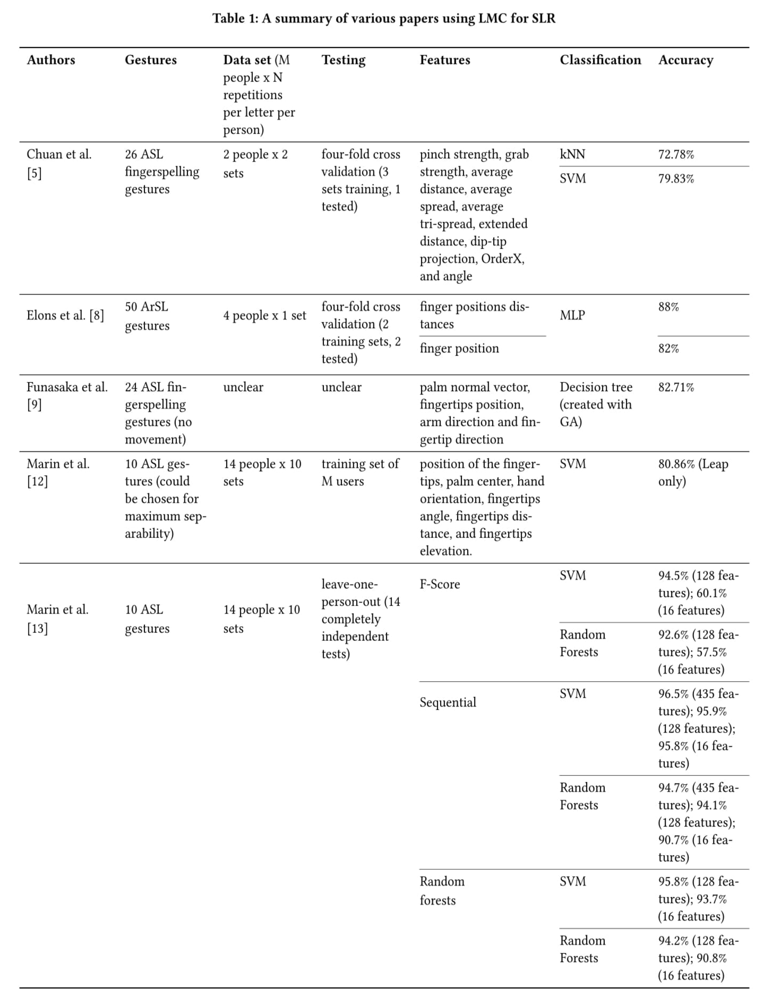
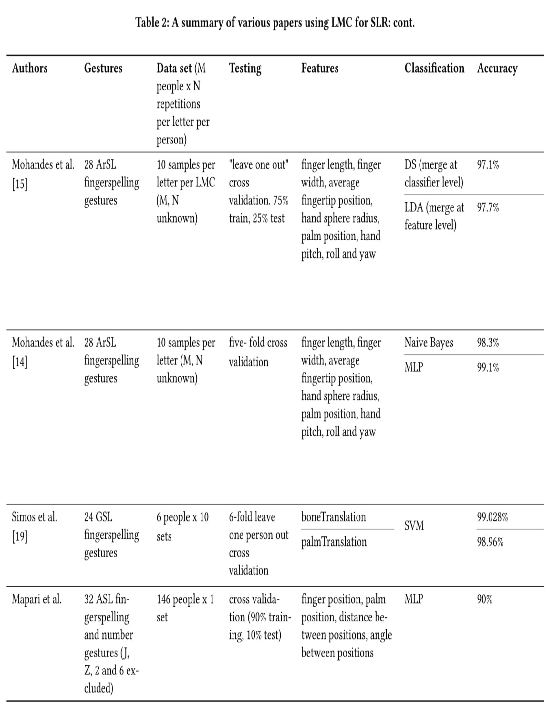

Abstract
Sign language facilitates communication both within the community and between the deaf and the hearing. Sign language recognition can be used to ease the learning of sign language, or even to circumvent it altogether. This paper provides a review of the current literature of the use of the Leap Motion Controller (LMC) to interpret sign language and a comparison of methods and their resulting accuracies. The classification algorithms explored include: k-Nearest Neighbour, Support Vector Machine, Random Forests, Artificial Neural Networks, Bayesian algorithms, and Linear Discriminant Analysis. The most promising combination of variables, across different sign languages, seems to be the SVM with sequential feature selection.
Introduction
Sign Language is important, but learning languages is difficult. For this reason, computers and various input devices have been applied to create the field of automatic sign language recognition (SLR).
Over the last several years, the scene of the hand gesture recognition field has changed due to the emergence of several depth based devices, for example, the Microsoft Kinect and the Leap Motion Controller (LMC). This paper will focus on reviewing the literature concerning the use of the LMC to recognize sign languages. The chosen methods and their results will be compared in order to find the most successful approaches.
A wide selection of research about the LMC in relation to sign language recognition is available. The LMC has been used to recognise several sign languages, including Greek Sign Language (GSL) [19], Arabic Sign Language (ArSL) [8, 14, 15], Chinese Sign Languages [23], American Sign Language (ASL) [5, 9, 12, 13, 11], and South African Sign Language (SASL) [18]. Most studies have focused on fingerspelling, as this does not usually require arm movement or facial expressions, so these similarities are assumed to be enough to allow a meaningful comparison.
Section 2 will give an overview of sign language recognition using the LMC, then section 3 along with tables 1 and 2 will summarise the approaches and results of the experiments, and in section 4, a discussion of the results is provided.
Overview
The LMC is a depth based hand recognition tool. Its API provides some predefined gestures, and outputs a set of features, but no raw depth map data [16]. This simplifies testing, but LMC's own recognition software has problems, as described by Potter et al. [16]. Most importantly for the scope of fingerspelling, the Leap software struggles with representing the hand accurately when some fingers are obscured, or if two fingers are too close to one another [16]. It is not clear whether Orion (LMC software update) addresses these issues. A broader problem with using the LMC for SLR is that it does not recognise facial expressions which is extremely important for sign language users [2, 10. 7, 22]. It is possible that the first problem may be remedied by facing the LMC more directly to the gestures, either by moving the device or by facing the gestures towards the camera. Mohandes et al. [15] used two perpendicular LMC devices, however the performance was not increased drastically when compared to other approaches.
Use of Machine Learning
The use of machine learning helps overcome several difficulties. For example, it can help with some shortfalls of the LMC, it can handle the complex and numerous sign language gestures [6], and it can handle with the different ways people repeat a particular sign [14]. Because of the necessity of using machine learning for the present task, this paper will only review classification algorithms based on machine learning.
Results
Broadly, the literature deals with feature extraction, and gesture classification. A variety of both variables have been used in the literature, as can be seen in tables 1 and 2. As mentioned previously, the data set generally consisted of some fingerspelling gestures, and the testing was done using some form of cross validation. The size of the data set varied significantly from author to author, but remained constant between two papers of the same author, allowing for easier comparison.
Classification
In the literature, most of the machine learning has been focused on the classification stage of recognising a gesture from Leap data. This section will briefly describe these algorithms and state the range of accuracies these algorithms achieved.
Support Vector Machines (SVM)
This is the most popular algorithm in the literature for classification of the gestures [4]. The SVM algorithm finds a hyperplane that separates two classes cleanly, and with as much margin as possible [1]. The SVM method is successful for both static and dynamic gestures [4]. This method was used by Chuan, Marin, and Simos, and they all found accuracies ranging from 79% - 99%. Quesada et al. found similar accuracies to Chuan et al. [17], however they did not state an overall accuracy of their proposed system.
Neural Networks (ANN)
The multi layer processor (MLP) neural network, in this case, takes features as input, processes them in a hidden layer, and outputs decisions [7]. The MLP method is more successful with static gestures than dynamic [4]. This method was used by Mohandes, Elons, and Mapari, and accuracies ranging from 82% - 99% were found.
k-Nearest Neighbour (kNN)
The kNN algorithm uses the Euclidean distance between an instance and a class's attributes as a measure of similarity [20]. The kNN algorithm is good for both static and dynamic gestures [4]. This was used by Chuan et al. and Clark et al. who achieved accuracies of 72.78% and 82.5% respectively.
Random Forests (RF)
The RF algorithm uses a set of trees for prediction, where each tree depends on a vector sampled randomly from the same distribution [3]. This method is more successful with dynamic gestures than static gestures [4]. Marin et al. got an accuracies from 57% to 94% using Random Forests, depending on what features were selected.
Naive Bayes Classifier (NBC)
The NBC algorithm uses the Bayesian formula to predict the probability of an event happening, given other events and their probabilities [14]. Mohandes et al. achieved about 98% accuracy using this method.
Dempster-Shafer (DS)
The DS algorithm generalises the Bayes algorithm by adding an uncertainty term, θ so the equation looks as follows: [15]. Mohandes et al. achieved a 97.1% accuracy when combining the data from two LMCs at the classifier level using DS.
Linear Discriminant Analysis (LDA)
To ensure maximum class discrimination, the LDA algorithm decreases data dimensionality by using linear combinations of factors obtained from a projection matrix [15]. Mohandes et al. achieved a 97.7% accuracy when combining the data from two LMCs before classification, and classifying using LDA.
Other variables
As seen in the previous section and Tables 1 and 2, a wide variety of accuracies can be achieved by a single classification method. This may be due to the parameters of the classification methods, or due to the other variables in the experiment, such as feature extraction, the gestures classified, or the amount of training data. This section will look at some of those variables and speculate on the causes of the varying accuracies.
Feature Selection
Trigueiros et al. analysed four classification algorithms using Kinect data [20], and they found that the ANN had the best performance for the task of sign language recognition due to its high accuracy, and acceptable training time. However this result does not necessarily translate to Leap data, due to different methods of preprocessing.
Marin et al. had interesting results when comparing three different feature selection algorithms: F-score (measure of how discriminative a factor is); Sequential (the feature whose addition achieves the greatest improvement in accuracy is added to the set, until the required number of features is reached); and Random forests. The best results were generally found with the sequential algorithm and the SVM classifier (reaching 95.8% with only 16 features). This result can be compared to Marin's earlier paper [12] which finds a somewhat lower accuracy of 91.28% (joint Leap and Kinect data) using 6 features.
Simos's feature sets control for hand size (boneTranslation) and hand location (palmTranslation) and both of these get very good results (about 99% accuracy). However, previous papers [12, 13] also adjust for these variables and do not get accuracies as high as Simos et al, even when keeping the classifier constant. This suggests that another variable is responsible for Simos's success, possibly the GSL gestures.
Set up
Quesada et al. explicitly compared two set ups of LMC experimentation [17]. One was the user-sensor set up, where the LMC lies flat on a surface, and the user tilts their gestures down towards the camera. The other was the user-user set up, which positioned the LMC underneath the gestures, but the gestures were facing the horizon (palm parallel to camera). The user-sensor set up did perform better, but surprisingly, the user-user set up also recognised a fair number of gestures, despite the problems with occlusion. Marin et al. [12, 13] tilted the hand forward towards the LMC, and Mapari et al. [11] tilted the LMC towards the palm. It is assumed other papers have a similar set up to assure minimal occlusion.
To overcome the problems of separating gestures, Quesada et al. tested the system by interspersing every gesture with the gesture for the number 5. This is to ensure the separation of the gestures, even when movement is involved. Simos et al. mentioned prolonged pauses to indicate a new gestures, and movement to indicate the beginning of a new (static) gesture.
Gesture selection
The gestures analysed in the literature tend to be quite different from one another. ASL was the most frequently studied language, but even within that, the chosen gestures varied significantly. Most notably, Marin et al. chose only ten gestures (mostly) from the fingerspelling alphabet and the numerals, in no particular order. This means that the gestures chosen may be even less representative than just the fingerspelling alphabet. Indeed, the most confused gestures such as those for M, N, and T [5] were all missing from this data set.
 
Applications
Seymour et al. [18] implemented an Android sign language recognition using glove based input, and achieved an accuracy of 99%. The design of this application is loosely divided into data acquisition, gesture classification, and the GUI. They used a bluetooth connected glove, which is better than a wire connection, but still loses the mobility of this application somewhat, as carrying around a glove is cumbersome.
A generic system for sign language recognition was developed by Trigueiros et al. [21]. Trigueiros identified the necessity of using separate classification schemes for static and dynamic gestures and proposed three modules: a pre-processing module, a static gesture module, and a dynamic gesture module. The pre-processing module will have limited usability for Leap data, as a lot of that is performed by the Leap software. However, this is where some of the shortcomings of Leap software can be rectified, using some of the suggestions from Potter et al. [16], for example, inferring that two fingertips touched when the fingers disappear after coming closer together. The separation of classification of static and dynamic gestures allows an application to make use of the best algorithms for each case, as found by Cheng et al.
Discussion and Recommendations
While sure to be more effective, getting a large population to train a system does not seem practical, so more consideration is given to the classifiers and features which work best with smaller data sets. Out of these, the MLP classifier Mohandes et al. [14] used returned the best accuracy of about 99%. However, the ArSL gestures used were all static, and MLP has been shown to recognise static gestures better than dynamic gestures [4]. If an application is to be extended beyond fingerspelling, it needs to be well suited to dynamic gestures as well. The SVM and the kNN are well suited to both of these tasks [4]. The SVM method is more versatile and seems to provide better results for this problem. It is recommended to use the SVM for classification, and the sequential algorithm for feature selection explored by Marin et al. For the set up of the system, further testing of combinations of devices is recommended. However, for the set up of the LMC, it is recommended to tilt the device up towards the user's palm rather than tilting the hand, to avoid uncontrolled interactions with features such as hand pitch, roll, and yaw.
Conclusions
In this paper, a comparison of sign language recognition methods using the Leap Motion Controller has been provided. The classification methods looked at included the kNN, SVM, NBC, DS, LDA, MLP, and Random Forests algorithms The two most promising classification methods were the MLP neural network and the SVM method. The SVM method is considered more appropriate for sign language applications due to its ability to handle both static and dynamic gestures [4]. A sequential selection algorithm was successful [13] in identifying the best features to use for classification, and other papers have mostly used finger and hand positions, distances, and angles. The most promising combination of variables, across different sign languages seems to be the SVM with the sequential feature selection proposed by Marin et al.
References
- Asa Ben-Hur and Jason Weston. 2010. A user's guide to support vector
machines. Data mining techniques for the life sciences (2010), 223–239. - MS Bhuvan, D Vinay Rao, Siddharth Jain, TS Ashwin, Ram Mohana Reddy
Guddetti, and Sutej Pramod Kulgod. 2016. Detection and analysis model for
grammatical facial expressions in sign language. In Region 10 Symposium (TEN-SYMP), 2016 IEEE. IEEE, 155–160. - Leo Breiman. 2001. Random forests. Machine learning 45, 1 (2001), 5.
- Hong Cheng, Lu Yang, and Zicheng Liu. 2016. Survey on 3D Hand Gesture
Recognition. IEEE Transactions on Circuits and Systems for Video Technology 26, 9 (2016), 1659–1673. - Ching-Hua Chuan, Eric Regina, and Caroline Guardino. 2014. American Sign Language recognition using leap motion sensor. In Machine Learning and Applications (ICMLA), 2014 13th International Conference on. IEEE, 541–544.
- Andrew Clark and Deshendran Moodley. 2016. A System for a Hand Gesture-Manipulated Virtual Reality Environment. In Proceedings of the Annual Conference of the South African Institute of Computer Scientists and Information Technologists. ACM, 10.
- Walter H Delashmit and Michael T Manry. 2005. Recent developments in multi-layer perceptron neural networks. In Proceedings of the seventh Annual Memphis Area Engineering and Science Conference, MAESC. Citeseer.
- AS Elons, Menna Ahmed, Hwaidaa Shedid, and MF Tolba. 2014. Arabic sign language recognition using leap motion sensor. In Computer Engineering & Systems (ICCES), 2014 9th International Conference on. IEEE, 368–373.
- Makiko Funasaka, Yu Ishikawa, Masami Takata, and Kazuki Joe. 2015. Sign Language Recognition using Leap Motion Controller. In Proceedings of the International Conference on Parallel and Distributed Processing Techniques and Applications (PDPTA). The Steering Committee of The World Congress in Computer Science, Computer Engineering and Applied Computing (WorldComp), 263.
- Matt Huenerfauth, Pengfei Lu, and Andrew Rosenberg. 2011. Evaluating importance of facial expression in american sign language and pidgin signed english animations. In The proceedings of the 13th international ACM SIGACCESS conference on Computers and accessibility. ACM, 99–106.
- Rajesh B Mapari and Govind Kharat. 2016. American Static Signs Recognition Using Leap Motion Sensor. In Proceedings of the Second International Conference on Information and Communication Technology for Competitive Strategies. ACM, 67.
- Giulio Marin, Fabio Dominio, and Pietro Zanuttigh. 2014. Hand gesture recognition with leap motion and kinect devices. In Image Processing (ICIP), 2014 IEEE International Conference on. IEEE, 1565–1569.
- Giulio Marin, Fabio Dominio, and Pietro Zanuttigh. 2016. Hand gesture recognition with jointly calibrated Leap Motion and depth sensor. Multimedia Tools and Applications 75, 22 (2016), 14991–15015.
- M Mohandes, S Aliyu, and M Deriche. 2014. Arabic sign language recognition using the leap motion controller. In Industrial Electronics (ISIE), 2014 IEEE 23rd International Symposium on. IEEE, 960–965.
- M Mohandes, S Aliyu, and M Deriche. 2015. Prototype Arabic Sign language recognition using multi-sensor data fusion of two leap motion controllers. In Systems, Signals & Devices (SSD), 2015 12th International Multi-Conference on. IEEE, 1–6.
- Leigh Ellen Potter, Jake Araullo, and Lewis Carter. 2013. The leap motion controller: a view on sign language. In Proceedings of the 25th Australian computer-human interaction conference: augmentation, application, innovation, collaboration.ACM, 175–178.
- Luis Quesada, Gustavo López, and Luis Guerrero. 2017. Automatic recognition of the American sign language fingerspelling alphabet to assist people living with speech or hearing impairments. Journal of Ambient Intelligence and Humanized Computing (2017), 1–11.
- Michael Seymour and Mohohlo Tšoeu. 2015. A mobile application for South African Sign Language (SASL) recognition. In AFRICON, 2015. IEEE, 1–5.
- Merkourios Simos and Nikolaos Nikolaidis. 2016. Greek sign language alphabet recognition using the leap motion device. In Proceedings of the 9th Hellenic Conference on Artificial Intelligence. ACM, 34.
- Paulo Trigueiros, Fernando Ribeiro, and Luis Paulo Reis. 2012. A comparison of machine learning algorithms applied to hand gesture recognition. In Information Systems and Technologies (CISTI), 2012 7th Iberian Conference on. IEEE, 1–6.
- Paulo Trigueiros, Fernando Ribeiro, and Luis Paulo Reis. 2014. Generic system for human-computer gesture interaction. In Autonomous Robot Systems and Competitions (ICARSC), 2014 IEEE International Conference on. IEEE, 175–180.
- Ulrich Von Agris, Moritz Knorr, and Karl-Friedrich Kraiss. 2008. The significance of facial features for automatic sign language recognition. In Automatic Face & Gesture Recognition, 2008. FG’08. 8th IEEE International Conference on. IEEE, 1–6.
- Jihai Zhang, Wengang Zhou, Chao Xie, Junfu Pu, and Houqiang Li. 2016. Chinese sign language recognition with adaptive HMM. In Multimedia and Expo (ICME), 2016 IEEE International Conference on. IEEE, 1–6.